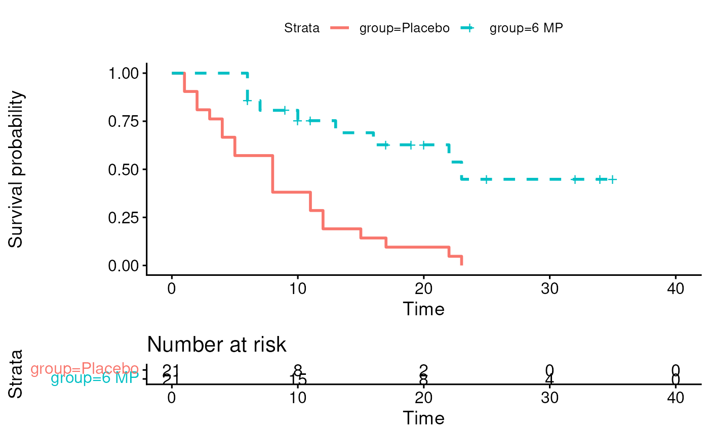
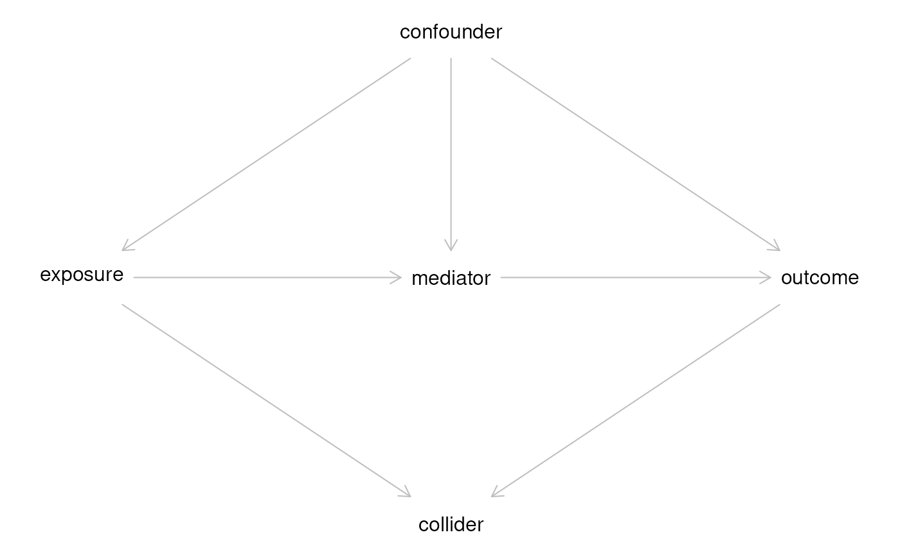

Session 7 lab exercise: Cox proportional Hazards
Levi Waldron
session_lab.RmdLearning objectives
- Fit a Cox proportional hazard model
- Create a stratified Kaplan-Meier plot
- Fit exponential and Weibull accelerated failure time models
- Fit a model using strata and a time-dependent covariate
- Create a DAG using dagitty
Exercises
- Fit a Cox proportional hazard model to the Leukemia 6 MP clinical trial dataset
- Create a stratified Kaplan-Meier plot
- Fit exponential and Weibull accelerated failure time (AFT) models
- Fit a stratified coxph model with a time-dependent covariate using an example from ?coxph
- Draw a DAG starting from dagitty.net and re-create it in R
Fit a Cox proportional hazard model to the Leukemia 6 MP clinical trial dataset
leuk <- readr::read_csv("leuk.csv") %>%
mutate(group = factor(group, levels = c("Placebo", "6 MP")))## Rows: 42 Columns: 3
## ── Column specification ────────────────────────────────────────────────────────
## Delimiter: ","
## chr (1): group
## dbl (2): time, cens
##
## ℹ Use `spec()` to retrieve the full column specification for this data.
## ℹ Specify the column types or set `show_col_types = FALSE` to quiet this message.Create a stratified Kaplan-Meier plot
kmfit <- survival::survfit(Surv(time, cens) ~ group, data = leuk)
survminer::ggsurvplot(kmfit, risk.table = TRUE, linetype=1:2)## Ignoring unknown labels:
## • colour : "Strata"
Fit exponential and Weibull accelerated failure time (AFT) models
coxfit <- coxph(Surv(time, cens) ~ group, data = leuk)
expfit <- survreg(Surv(time, cens) ~ group, data = leuk, dist = "exponential")
weibullfit <- survreg(Surv(time, cens) ~ group, data = leuk, dist = "weibull")| Dependent variable: | |||
| time | |||
| Cox | exponential | Weibull | |
| prop. hazards | |||
| (1) | (2) | (3) | |
| group6 MP | -1.572*** | 1.527*** | 1.267*** |
| (0.412) | (0.398) | (0.311) | |
| Constant | 2.159*** | 2.248*** | |
| (0.218) | (0.166) | ||
| Observations | 42 | 42 | 42 |
| R2 | 0.322 | ||
| Max. Possible R2 | 0.988 | ||
| Log Likelihood | -85.008 | -108.524 | -106.579 |
| chi2 (df = 1) | 16.485*** | 19.652*** | |
| Wald Test | 14.530*** (df = 1) | ||
| LR Test | 16.352*** (df = 1) | ||
| Score (Logrank) Test | 17.247*** (df = 1) | ||
| Note: | p<0.1; p<0.05; p<0.01 | ||
Note, don’t compare likelihoods between Cox and AFT models.
Fit a stratified coxph model with a time-dependent covariate using
an example from ?coxph
Create a simple test data set:
test1 <- data.frame(time=c(4,3,1,1,2,2,3),
status=c(1,1,1,0,1,1,0),
x=c(0,2,1,1,1,0,0),
sex=c(0,0,0,0,1,1,1))
test1## time status x sex
## 1 4 1 0 0
## 2 3 1 2 0
## 3 1 1 1 0
## 4 1 0 1 0
## 5 2 1 1 1
## 6 2 1 0 1
## 7 3 0 0 1Fit a model stratified by sex, with the time-dependent
covariate x:
## Call:
## coxph(formula = Surv(time, status) ~ x + strata(sex), data = test1)
##
## coef exp(coef) se(coef) z p
## x 0.8023 2.2307 0.8224 0.976 0.329
##
## Likelihood ratio test=1.09 on 1 df, p=0.2971
## n= 7, number of events= 5Draw a DAG starting from dagitty.net and re-create it in R
library(dagitty)
g <- dagitty('
dag {
bb="-2,-3,3,3"
collider [pos="0,1"]
confounder [pos="0,-1"]
exposure [exposure,pos="-1,0"]
mediator [pos="0,0"]
outcome [outcome,pos="1,0"]
confounder -> exposure
confounder -> outcome
confounder -> mediator
exposure -> collider
exposure -> mediator
mediator -> outcome
outcome -> collider
}
')
plot(g)